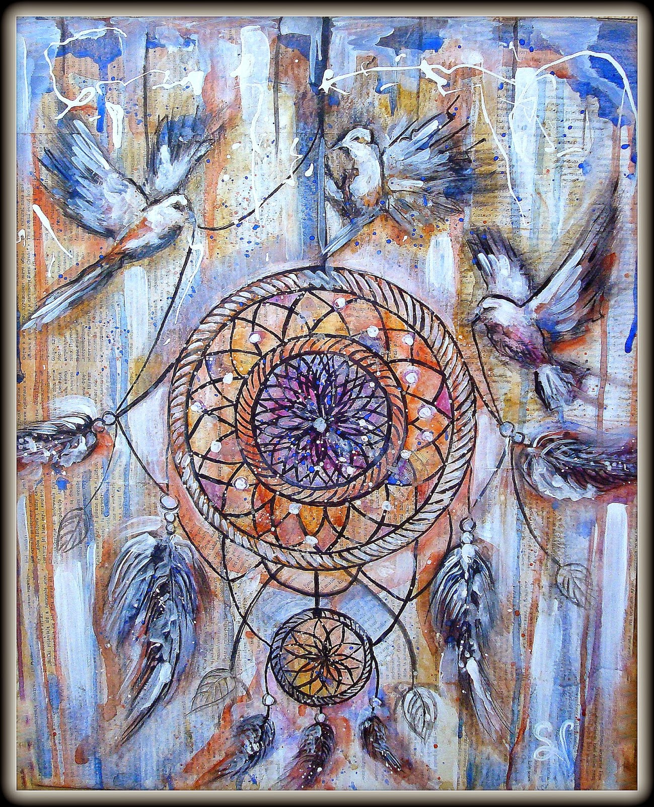

Paveikslai - tapyba.info - paveikslai internetu
 +370 673 77774 info@tapyba.info 0 0 Paieška Paveikslai Paveikslai su nuolaida Naujausi paveikslai Paveikslų kolekcijos Įrėminti paveikslai Skubus pristatymas Pagal tematiką natiurmortas gyvūnai miestas marinistinis angelai fantastinis gėlės žmonės Pagal kainą iki 100€ 100 - 200€ 200 - 500€ 500 - 1000€ 1000 - 5000€+ Pagal medžiagą Drobė Kartonas Kita Popierius Pagal techniką Akrilas Akvarelė Aliejus Grafika Mišri technika Pastelė Spauda Dailininkai Visi dailininkai Populiariausi Arvydas Urniežius Romas Žmuidzinavičius Oleg Riabčuk Artūras Slapšys Česlovas Grigonis Paslaugos Dovanų kuponai Autentiškumo sertifikatas Individualus paveikslo užsakymas Rėminimas Pagalba renkantis Atvežimas pasižiūrėti Patarimai Kaip pirkti Pirkimas Pristatymas Grąžinimas Kontaktai Kontaktai Apie galeriją 0 0Visi paveikslai
Asonijus Lapajevas
Mano stichija (Vėžys)
66×80 cm 265 €Oleg Riabčuk
Kylantis rūkas
40×80 cm sutartinė kainaRimas Baukus
Raudonas ruduo
33×24 cm 69 €Arūnas Miliukas
Miesto rapsodija
40×100 cm sutartinė kainaČeslovas Grigonis
Moterų vasara
92×92 cm sutartinė kainaDeividas Sinkevičius
Naktyje
52×34 cm 80 €Romas Žmuidzinavičius
Senas tiltas
70×60 cm 205 €Rita Razmienė
Ant lelijos žiedo
80×80 cm 190 €Arvydas Urniežius
Žydėjimas
73×109 cm 265 €Romas Žmuidzinavičius
Žalia vasara
60×80 cm 220 €Česlovas Grigonis
Europos pagrobimas
115×86 cm sutartinė kainaOleg Bogdašič
Natiurmortas su vyšniomis
32×42 cm 70 €Deividas Sinkevičius
Tikėjimo prieglobstis
44×35 cm 80 €Česlovas Grigonis
Abstrakcija I
40×40 cm sutartinė kainaArvydas Urniežius
Visatos angelas
61×61 cm 130 €Česlovas Grigonis
Abstrakcija II
40×40 cm sutartinė kainaRimas Baukus
Bangos ir debesys triptikas
33×72 cm 170 €Vladimir Jarmolo
Rytas
50×50 cm sutartinė kainaTanni
Ugninė
70×50 cm 350 €DaKi
Nuojauta
40×50 cm 145 € 1 2 3 4 5 6 … 107 Kitas Paveikslai Dailininkai Paslaugos Kaip pirkti Kontaktai Pirkimas Pristatymas Grąžinimas Rėminimas Dovanų kuponai Paveikslų kolekcijos Tapybos žodynas A-Ž sekite mus: +370 673 77774 info@tapyba.info © 2020 tapyba.info - paveikslai internetu Šiame puslapyje yra įdiegti slapukai (ang. Cookies), kad ateityje Jūsų apsilankymai šioje svetainėje būtų patogesni. Slapukai (ang. Cookies) − nedidelės rinkmenos, kurias į Jūsų kompiuterio kietąjį diską perkelia svetainė. Slapukus naudojame norėdami sekti Jūsų prioritetus ir veiklą šioje svetainėje. Slapukuose gali būti įdėta įvairi informacija: apskaičiuota, kiek kartų apsilankėte svetainėje, registracijos informacija ir kiek kartų žiūrėjote tam tikrą puslapio dalį. Slapukus įprasta naudoti daugumoje didžiųjų svetainių, siekiant tobulinti svetainę, ateityje Jūsų apsilankymai šioje svetainėje būtų patogesni.
Dauguma naršyklių pritaikytos naudoti slapukus, tačiau nustatymus galima keisti ir slapukus blokuoti. Norėdami sužinoti daugiau apie slapukus, kaip juos blokuoti ar visiškai jų atsisakyti, peržiūrėkite savo naršyklės aprašymus.
Reikėtų atkreipti dėmesį, kad be slapukų kai kurios svetainės funkcijos gali būti neprieinamos ir naudotojas gali negalėti pasinaudoti visais svetainės privalumais.
Slapukai (ang. Cookies) − nedidelės rinkmenos, kurias į Jūsų kompiuterio kietąjį diską perkelia svetainė. Slapukus naudojame norėdami sekti Jūsų prioritetus ir veiklą šioje svetainėje. Slapukuose gali būti įdėta įvairi informacija: apskaičiuota, kiek… Plačiau Slapukai (ang. Cookies) − nedidelės rinkmenos, kurias į Jūsų kompiuterio kietąjį diską perkelia svetainė. Slapukus naudojame norėdami sekti Jūsų prioritetus ir veiklą šioje svetainėje. Slapukuose gali būti įdėta įvairi informacija: apskaičiuota, kiek kartų apsilankėte svetainėje, registracijos informacija ir kiek kartų žiūrėjote tam tikrą puslapio dalį. Slapukus įprasta naudoti daugumoje didžiųjų svetainių, siekiant tobulinti svetainę, ateityje Jūsų apsilankymai šioje svetainėje būtų patogesni.
Dauguma naršyklių pritaikytos naudoti slapukus, tačiau nustatymus galima keisti ir slapukus blokuoti. Norėdami sužinoti daugiau apie slapukus, kaip juos blokuoti ar visiškai jų atsisakyti, peržiūrėkite savo naršyklės aprašymus.
Reikėtų atkreipti dėmesį, kad be slapukų kai kurios svetainės funkcijos gali būti neprieinamos ir naudotojas gali negalėti pasinaudoti visais svetainės privalumais.